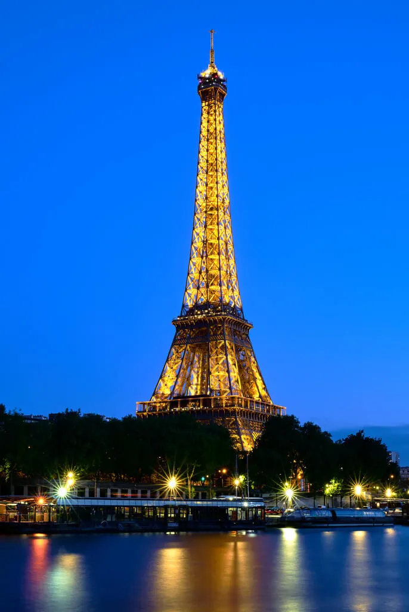

1. Paris, France

Known as the City of Light, Paris is a timeless destination that offers world-class art, exquisite cuisine, and iconic landmarks like the Eiffel Tower and Louvre Museum.
“Paris was absolutely magical! Walking along the Seine at sunset was an experience I’ll never forget.”
– Emily, USA